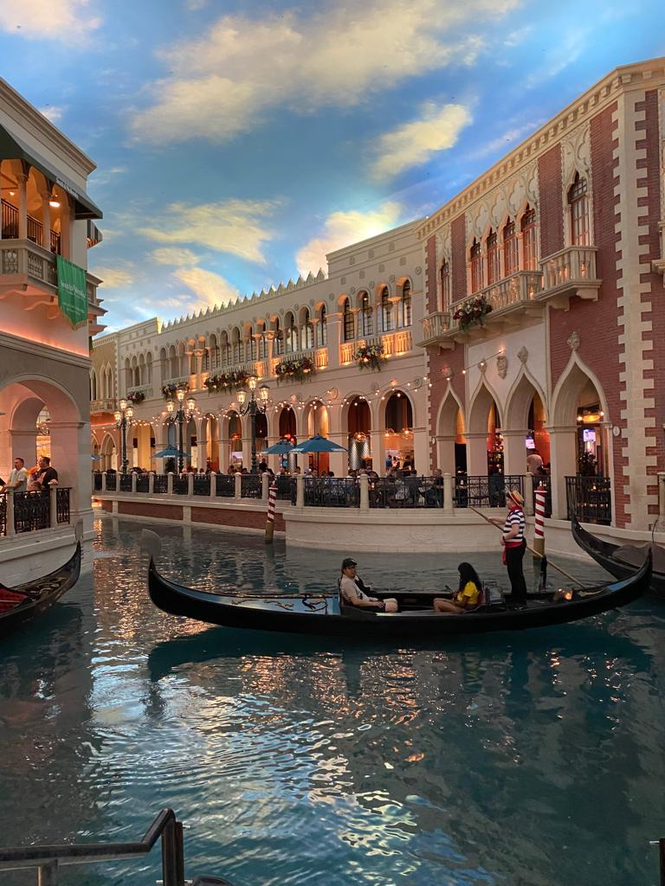

My FitBit reported nearly 23,000 steps for Thursday, and I think I have the longest legs. Lots of walking but a spectacular day, fitting in the classier side of Vegas in a single day.
We got up lazily and wandered through to New York New York to get some breakfast. Jake was keen for a warm pretzel and the rest of us had Kristy Kreme. What the hell, we’re on holiday!
The kids didn’t really understand the concept of looking at hotels and walking through casinos before we set off. They started to get it via the Luxor, Excalibur and New York New York. Jake found his dream watch in swatch, at a decent price, so that was bought. I’m going to keep it classy, consistent with the theme of the day, and make no jokes about his Uranus watch. ☺️
I love a free tram, so we skipped out a couple of generic hotels down the strip to get to the Bellagio via the tram. The kids wanted a drink on arrival, so found a sweet shop and they got a small bottle of Coke each. They were $6! Each! We decided to visit the loo to make sure we got good value. In fairness, the huge flowers in the Bellagio conservatory were free to look around and high quality. The inside of the Bellagio, including the casino, felt the nicest and least cramped.
We walked through Caesar’s Palace to get to the Forum Shops, which were a good mix of reasonable and high-end. Freya got a lovely sports skirt and Jake nearly bought a McLaren bag. We did lots of browsing then had McDonald’s for lunch so we could have their amazing frozen drinks.
Next on the list was the Venetian. The kids were starting to get it now, as we walked in St Mark’s Square and alongside the gondolas. Freya was mortified at the prospect of getting one and then someone sings opera at you.

We worked our way up the strip, inside casinos for their aircon where possible until we got to Paris. We had a little sit down and decided that Paris had the most disappointing interior relative to its exterior. Alison really wanted to watch the Bellagio fountains on the hour, so we bore the heat to watch. The tall squirts are very high!
More walking outside needed where there is no casino (but there is a building site). One man was selling ice cold water for $2 or the opportunity to put your head in his freezer for $20. Tempting…
The Coca-Cola and M&M shops were worth a visit but even more so was the pop-up Stranger Things shop. There were photo opportunities, great merchandise and the whole space had some nice 80s touches. On the way back, the kids stopped for ice cream and those of legal age stopped for frozen cocktails. Yum.
Alison says I’m not allowed to write that I sat naked in front of the window (one-way glass) drinking wine while writing about the previous day, so I’ll skip that bit. We had a dinner reservation at a proper restaurant in the hotel, Diablo’s, which was like a swanky Chiquito’s. The other three cleared their plates, except for the blitzed black refried beans. I just cleared my plate. And the cocktails were good too. Yum.
We had a big margin between food and the show and we finished quickly. That left some time to explore our hotel and Mandalay Bay, drink some more frozen cocktails, pay $6 for a bottle of water and have a little sit down.
It was then time for our show, ONE, by Cirque du Soleil, based on the music of Michael Jackson. Following extensive research and joining the MGM reward club, we got amazing seats at a decent price. We got to see the performers running right in front of us, including one hilarious moment when someone jumped up in front of Alison and scared her. The performers were getting loaded into their swings just to the side of us. The show itself was the best thing we’ve ever seen. All the people on stage were moving as one, bang on time and the principals were amazing. The acrobatics, dancing, light show and music were spectacular. There was almost too much to look at. Wow.
As you know, I like a free tram, so me and Alison got that back to our hotel, while the kids walked, as that was quicker.
What a day. Need a rest.